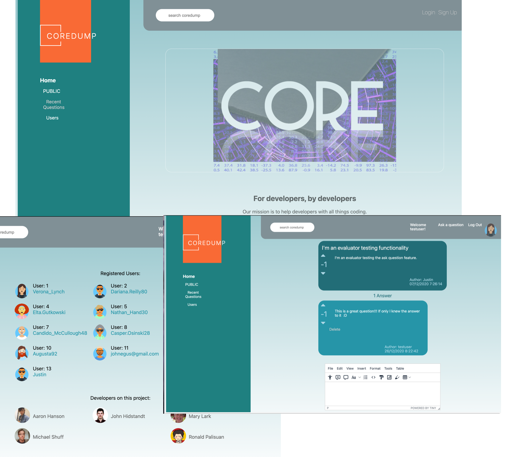
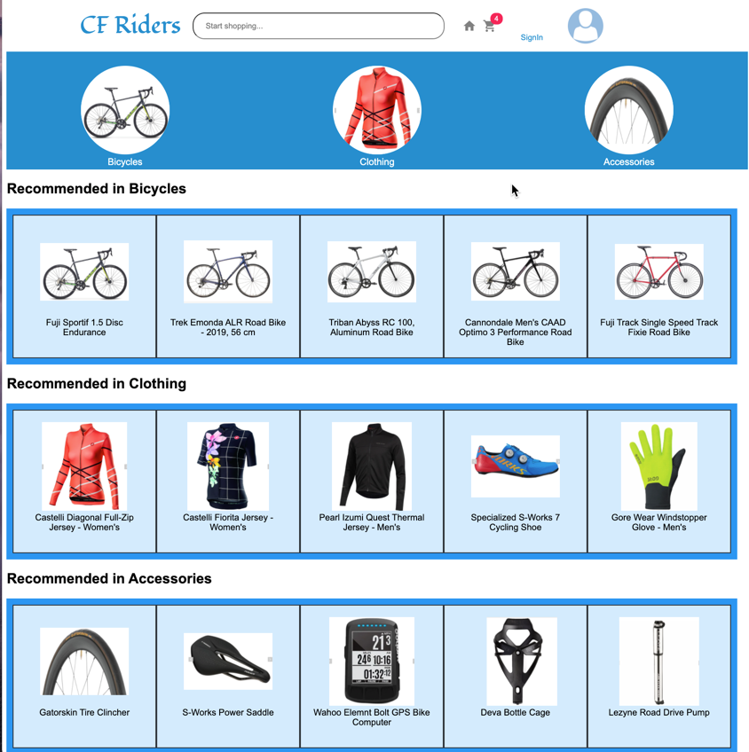
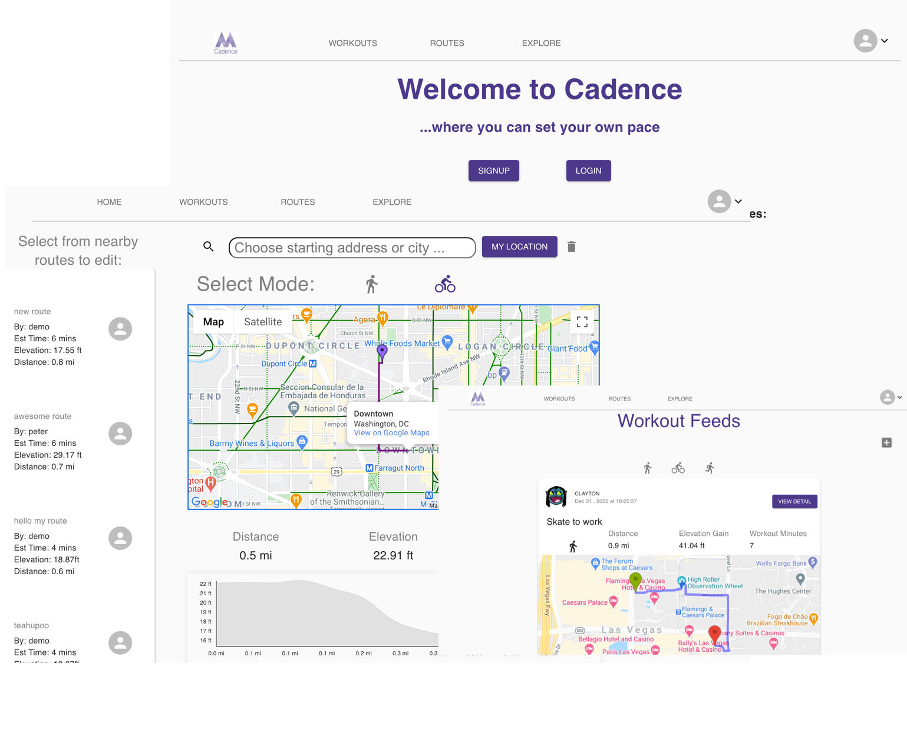
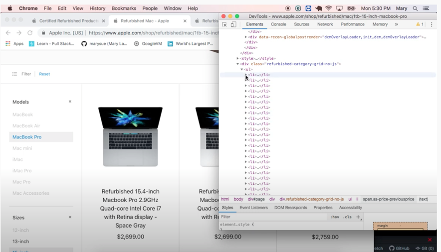

Mary Lark, Full Stack Engineer

Portfolio
Welcome to my portfolio page. I'm excited to present the projects that I have accomplished in my coding bootcamp at appAcademy as I freshened up my tech skills.
At the end of this page you'll find additional scripting and courses I've created along my professional career in both Software Engineering and IT Engineering.
Special note: Each portfolio screen shot is linked to the running version of the project on Heroku. Heroku puts their dynos to sleep when not in use. It may take a minute to both redirect, and startup the dyno. Patience, in this case, is truly a virtue!
Group project #1: Coredump
This project is a clone of the Stackoverflow site, demonstrating social networking capabilities such as posting questions, commenting on the questions, and rating both the questions and the answers.
Solo project #2: CF Riders
CF Riders (or Carbon Fiber) project is an e-shopping site for bicycle enthusiasts. Taken from the idea of etsy, this site provides users the ability to rate equipment and leave equipment reviews.
Group project #3: Cadence
The Cadence project is a fundamental clone of the Strava site utilizing google maps to plot routes for bicycling, running and walking. Utilizing the Google Maps API, the user is able to create their own route, comment on the route, upload photos from their route, and share their route with the public at large.
Capstone project #4: Placement Scheduler
Placement schedule was created as a first step towards my ultimate project, which is creating an AirBnB clone site for scheduling tutors, alleviating the need for tutors to have to deal with booking, payment collections, cancellations, etc. This app is the first step along the way to my ultimate goal.
Created specifically for a friend of mine who has started a Dental Staffing firm, this app deals with placing dental professionals, allowing the contractors to block out dates they do not want to work, and offices to see exactly the availability of any given position within their office within a moment's notice.
Additionally, there's an agency view so that the agency can track all of the staffing placements, review all of the current offices enrolled as well as contractors enrolled.
The next steps on this app in the near future will be:
- Download a csv sheet for the agency for tax purposes, indicating who was placed and where and when they were placed.
- Create instant messaging to notify the agency and the contractor that they have been placed.
Web Scraper
This project was designed when I was looking for a new Mac. The current Apple site has a refurbished page where you can save money by buying refurbished. The problem with the page was that you couldn't perform searches based on criteria, like pricing, cores, hard drive type and size, etc. In order to figure these things out I needed to navigate to three different pages and typically got confused about where I started.
Web scraper solved this issue for me by scraping the apple site, storing the information in memory, and providing an interface to sort and view the information.
Because web pages are so frequently changed, this application became outdated shortly after I had made my purchase! Meanwhile, I managed to get a demo video showing the product:
IT Application : Watcher
PowerShell:In this event driven script I make files available to Dreamweaver in our virtualized environment. Dreamweaver expects files to be located in c:/inetpub/www directory. However, due to the virtualization process we destroy the VM when the user logs out - which means the c: drive is destroyed. So to handle this, we store the user's files on a network mounted drive. Why not repoint Dreamweaver? Well, Dreamweaver was never intended to be "repointed" to a different storage area. To appease Dreamweaver when the user starts the program the user files are copied from their network storage to c:/inetpub/www directory. When a file is touched (modified, added, or deleted), this is mirrored on the user's network mounted drive from the local c:/inetpub/www directory. to preserve the files before the virtual machine is destroyed.
IT Application: Active Directory Information
Visual Basic:
This sample script was written to locate specific information from active directory, given an organizational unit (ou) and surName substring, returning the associated MD5 hash and publicID for the user.
Training Courses
When I was brought on at Toolwire I was tasked with relieving the senior architects and senior managers from duties relating to the day-to-day troubleshooting and deployment of virtualized environments for the higher education department.
In creating these new environments, and troubleshooting existing environments I needed to fully understand exactly every step of processing from the time the student clicks the virtualized lab link from their school’s website, until the virtualized machine was delivered within their browser.
Documenting everything I learned along the way, I realized that no one person actually understood the workflow. The technical operations crew had limited knowledge, and were the people on 24/7 call. The senior engineers were being over-burdened with basic support requests as well. There needed to be a middle-ground.
I quickly realized that I could create this middle-ground by creating and delivering a series of technical luncheons. The powerpoint linked below is a sample of just one of the luncheons:
Higher Education Knowledge Acquisition (HEKA) : Lab Launch Links
In addition, our Course Designers were having difficulty documenting the environment for students. The Course Designers were non-technical, so terms such as virtualization and hotplugging were a bit of a mystery. As a result of delivering the HEKA series, I was asked to prepare a course for the Course Designers on virtualization:
Virtualization and Persistence
Contact
email: mary@marylark.com
phone: +1 925 866 1111
Location
Parker, CO© 2025 Mary Lark. All Rights Reserved.